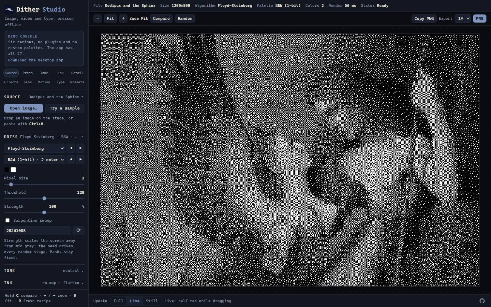

Dither Studio
Web & DesktopAn offline dithering press for images and video. Supports 46 dither algorithms, built-in and custom palettes, per-object layers, an effects stack, text mode, and video in a zero-dependency app that opens from its own folder.
Everything runs locally in the browser or desktop app; exports PNG up to 8×, text grids, WebM video, and JSON recipes.